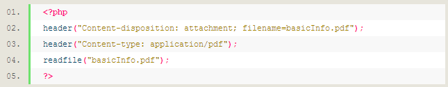

As noted the primary issue with the download attribute is that it doesn’t do much. That doesn’t work well when you have multiple users using different browsers and versions. In addition, it doesn’t help much when you want to download more than one file. Or what if you want the user to view the file in a new page instead? This is all covered in this section.
First, it doesn’t help to scale downloading files when you can’t download one to begin with. The previous section showed that download only works with HTML5 and on specific browsers. Why? Put simply, HTML wasn’t built for that. In its place one will have to use other means either through PHP or JS. The first way to solve this problem, is to call a PHP script on the server that pulls the file for you in the browser – bypassing HTML. A simple a href will be called to run the PHP file. That file can then be downloaded in the same page, a new tab, or a new window. A standard PHP clip is below:
These lines force the browser to display the save dialog and download the appropriate files. The first line declares the content type as needed, in this case a PDF. The second lines supplies the recommended filename to the browser that will be downloaded as an attachment. The third line reads the source of the file. These three lines are all that are needed to bypass any browser restrictions, assuming the site’s host server is working properly with PHP. However, what if a user wants to have more than one file downloaded, or they want to modify how the data is presented before download? This is where anther language is needed outside of HTML. PHP is great for grabbing content from same server directory, however the HTTP protocol can only send one file per request. JavaScript is needed to make multiple calls of different PHP files, each PHP calling one specific file. It should be noted that there are numerous ways one can go about this, though I’ve solved this by making the a link for the user click event. This Will open a new window for any number of PHP files that you declare, thus circumventing the challenge of PHP only being able to make one request.